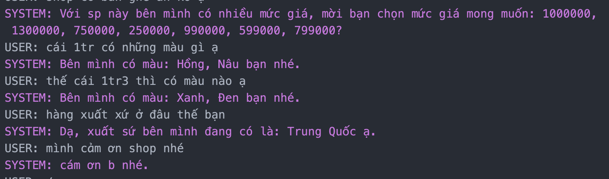

Play Around¶
In this place, we can quickly run some application such as: BabeShop or WeatherAsking. These applications was built with comet. You can download the data or model by a simple commandline interface to train or inference comet’s system with a defined specified application with preparing nothing. Ensure you’ve successfully installed comet before continue.
Running Babeshop’s domain¶
Init
BabeShopapplication
comet init -d babe
Note
We may need to change some variable in .env. This variable control LOGGING, AXIOM dataset, models and setup axiom account
AXIOM_EMAIL='user_email@ftech.ai'
AXIOM_PASSWORD='password'
After init BabeShop project we will see something similar this
├── config
│ ├── configure_infer.yaml
│ ├── configure_test.yaml
│ └── configure_train.yaml
├── data
│ ├── babe_database.json
│ ├── babe_domain.json
│ └── babe_ontology.json
└── src
├── __init__.py
├── babe_database.py
├── babe_dst.py
├── babe_handcraft_policy.py
├── babe_state_featurizer.py
├── babe_template_nlg.py
└── utils
├── __init__.py
├── age_parser.py
├── constants.py
├── money_parser.py
├── normalize_values.py
└── object_type_mapping.py
Download pre-trained models
comet model ls
comet model download
Note
All the information about version, ID model. You can set at .env
After download we will see models folder similar this
models/
└── BabeShop
└── v0.2.0
├── nlu
│ └── BabeDenverOneNet
│ └── denver-onenet.tar.gz
├── policies
│ ├── LSTMPolicy
│ │ └── lstm_policy_model.ckpt
│ ├── SVMPolicy
│ │ └── svm_policy_model
│ └── VanillaPolicy
│ └── vanilla_policy_model.ckpt
└── synonym_mapper
└── SynonymMapper
└── synonym_mapper.json
Running inference
comet run --config config/configure_infer.yaml
Sample dialogue with our Use Case
Training with Babeshop’s domain¶
Download dataset
comet data ls
comet data download
Train supervised policy and NLU
To train supervised policy and denver NLU, we run with train configure.
comet run --config config/configure_train.yaml